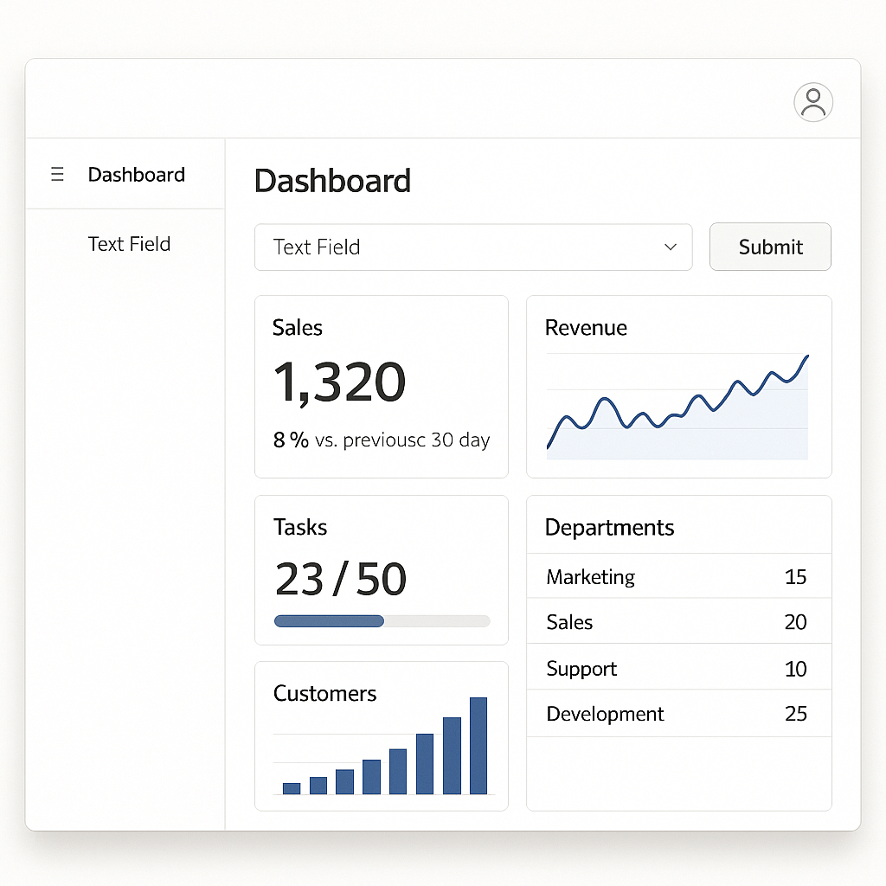
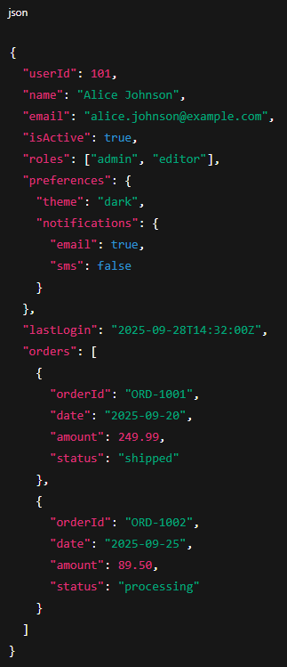

Python Algorithm
This project was done at my internship at Cambria. I was tasked with automating a test the factory wanted. This was a big project the factory wanted completed to help speed up their testing process. I wrote a python script that would take a JSON payload that had already been created, take that payload, parse it, gathered all of the data that was sent, verified that the data was applicable to the test. If applicable I would then run a comparison against a database to see if I could find a match, if a match was found the algorithm would add it to the JSON payload. The users would then take this data and decide what to do with it. The backend was written in Python, my side, and the front facing side was written in APEX Oracle. The project was a success and the factory was able to speed up their testing process by a significant amount. For some representation of the project I have some included photos of what the project would look like.

I would like to be able to include a picture of how the frontend application would look, but for me to replicate the information that would be needed to show the front end would take too long, as I am not a APEX Oracle developer, nevertheless, here is a blank photo of an application in APEX Oracle. We can say instead that the front facing end was a similar view as the website currently, where the user was allowed to submit their data into the website, that data would be sent back in a JSON payload to the algorithm and from their my algorithm would finish the work. It may look blank, but I signed an NDA so I can't show the real thing. Just use your imagination and picture user input boxes and a returning output.
To demonstrate what I would recieve and return, here is an example photo of a JSON payload
